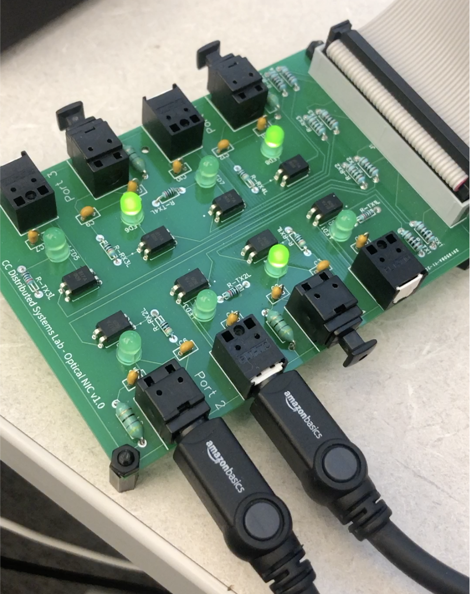
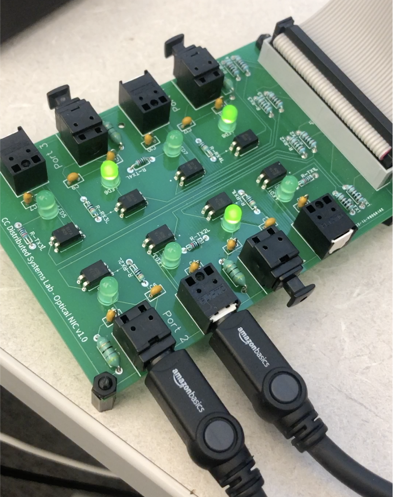

Education
Colorado College Colorado Springs, ColoradoB.A. in Computer Science 2020-2024
- GPA: 3.85
- Relevant Courses: Computer Networking, Software Design, Computer Organization, CS2
- Supplemental Courses: Number Theory, Computational Graph Theory, Inorganic Chemistry
Skills
Languages: C, Java, Python, PostgreSQLCommand-line: Gcc, Vim, Git, General UNIX Utilities
Highlighted Projects
Custom Network Stack Fall 2022- Worked in a team to implement network stack for novel hardware in C
- Wrote link, network, and application layers
- Wrote multiple test applications utilizing the network, including a chat app and an implementation of a card game
The Setup
 

work experience!